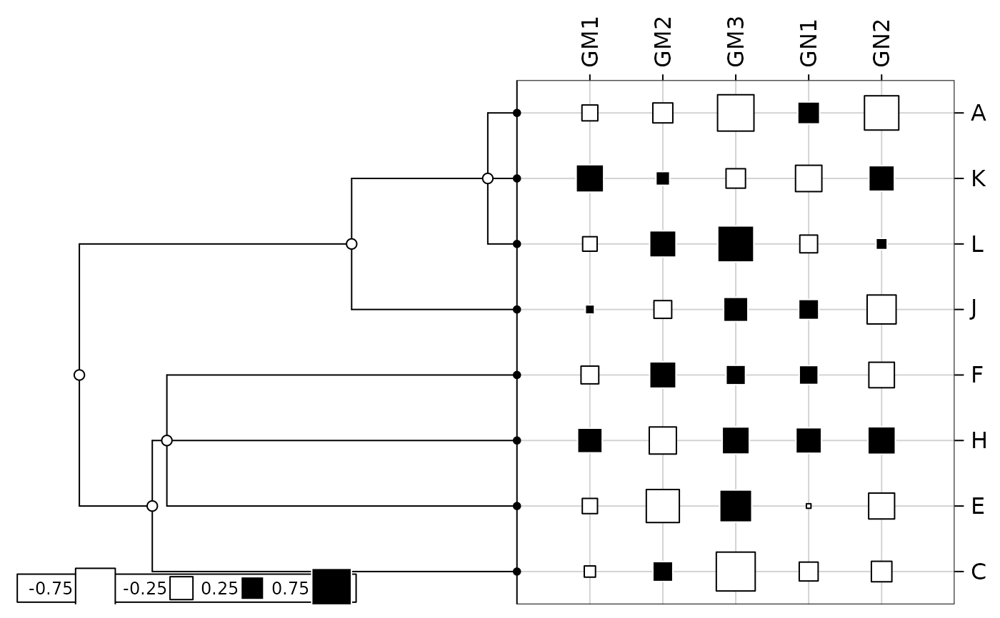

Fission pattern and heritable morphological traits
fission.RdThis data set contains the mean values of five highly heritable linear combinations of cranial metric (GM1-GM3) and non metric (GN1-GN2) for 8 social groups of Rhesus Macaques on Cayo Santiago. It also describes the fission tree depicting the historical phyletic relationships.
Usage
data(fission)Format
fission is a list containing the 2 following objects :
- tre
is a character string giving the fission tree in Newick format.
- tab
is a data frame with 8 social groups and five traits : cranial metrics (GM1, GM2, GM3) and cranial non metrics (GN1, GN2)
References
Cheverud, J. and Dow, M.M. (1985) An autocorrelation analysis of genetic variation due to lineal fission in social groups of rhesus macaques. American Journal of Physical Anthropology, 67, 113–122.
Examples
data(fission)
fis.phy <- newick2phylog(fission$tre)
table.phylog(fission$tab[names(fis.phy$leaves),], fis.phy, csi = 2)

gearymoran(fis.phy$Amat, fission$tab)
#> class: krandtest lightkrandtest
#> Monte-Carlo tests
#> Call: as.krandtest(sim = matrix(res$result, ncol = nvar, byrow = TRUE),
#> obs = res$obs, alter = alter, names = test.names)
#>
#> Number of tests: 5
#>
#> Adjustment method for multiple comparisons: none
#> Permutation number: 999
#> Test Obs Std.Obs Alter Pvalue
#> 1 GM1 -0.22782145 -1.3687266 greater 0.981
#> 2 GM2 -0.12668808 -0.7055978 greater 0.745
#> 3 GM3 -0.05388833 -0.3358572 greater 0.500
#> 4 GN1 -0.04535827 -0.2136030 greater 0.463
#> 5 GN2 -0.20293610 -1.1793508 greater 0.931
#>